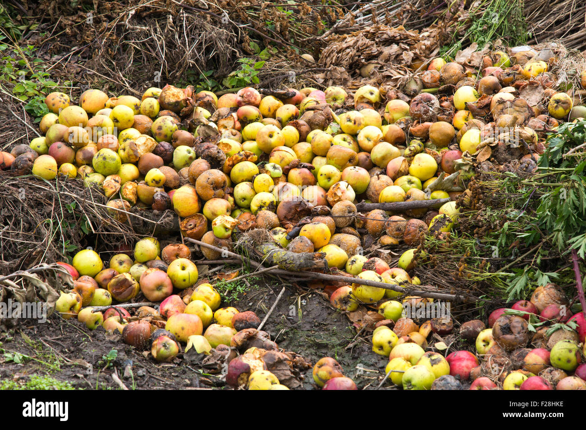
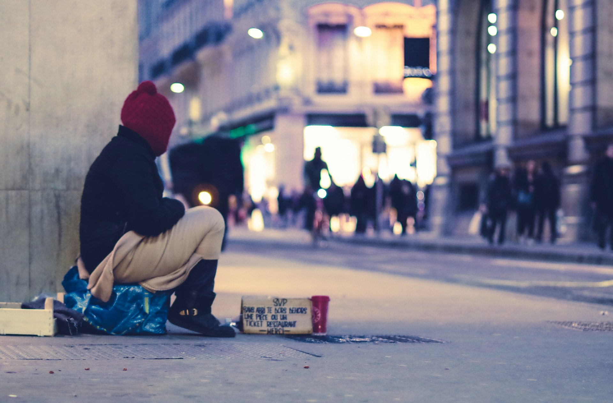
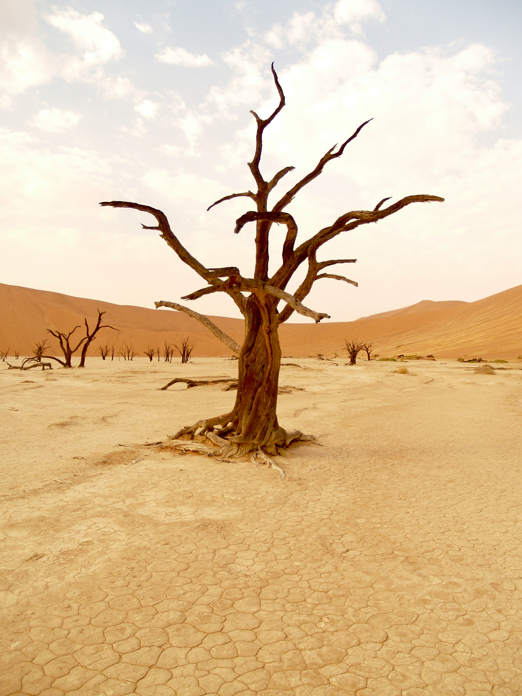
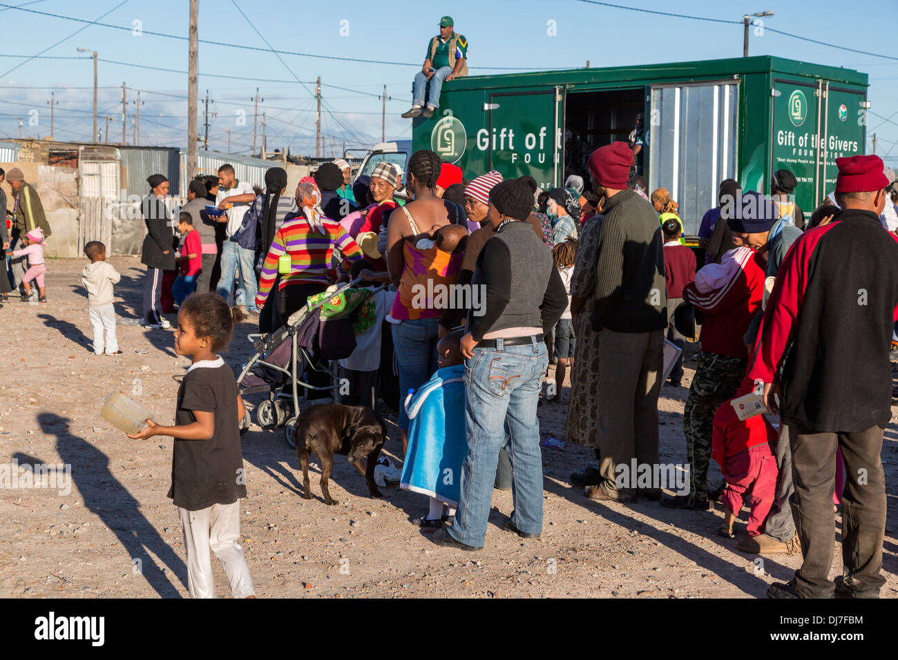

Food Waste

Homelessness

Climate Change

Food Charity
×
please click on the thumbnails below for more information
| Arial |
| Calibri |
| Tahoma |
Food Waste
Homelessness
Climate Change
Food Charity